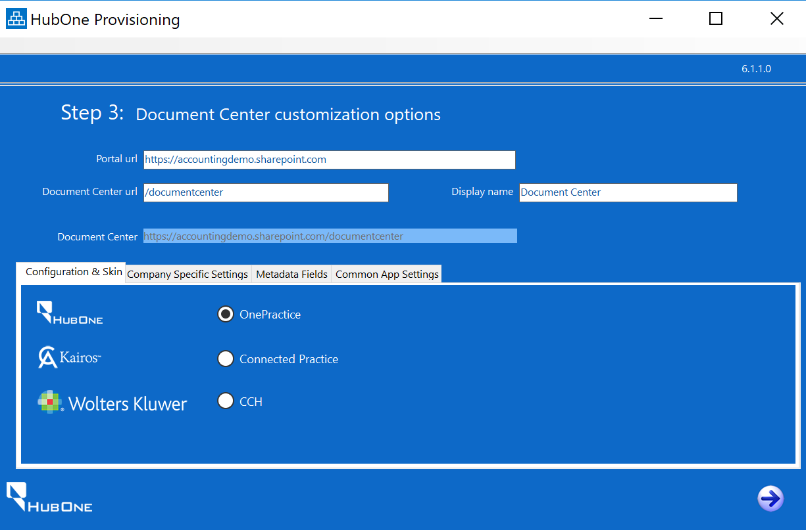

The following steps complete the installation of OnePractice.
Step |
Instructions |
Screenshot |
|---|---|---|
1 |
Click the Right Arrow at the bottom. |
|
2 |
Enter the following Information:
•Tenant Admin URL - The Admin Link for the Client's SharePoint Site
•Admin User - A Global Admin user login e.g. admin@<designator>.onmicrosoft.com
•Admin Password - The user's password
•Log File Location - The provisioning tool produces comprehensive logs. Choose a location to store them.
Once complete, click the Right Arrow at the Bottom. |
|
3 |
The Provisioning tool will check the Office 365 environment and permissions. Once complete, the next screen will appear.
ALL PRACTICE MANAGEMENT SYSTEMSSelect SharePoint.
Using a Live Practice Management System Instance Make sure 'sample data' checkbox is not checked.
Testing If you just want to experiment, you can mark the 'Add sample data' checkbox. Once complete, click the Right Arrow at the bottom. |
|
4 |
Accept the defaults for portal URL, Document Center URL and Display Name.
Complete the following:
Configuration & Skin - Choose the appropriate skin.
If you choose CCH / Wolters Kluwer, you will need to enter the CCH iFirm portal URL to the right. (see second screenshot)
Company Specific Settings - Upload the Customer Logo and Change the Helpdesk URL to your company's helpdesk URL. Once done, adjust the time zone.
Metadata - Add any desired Metadata fields.
Common App Settings - leave as default
Once done, click the Right Arrow.
|

|
5 |
The application will commence creating the portal. |
|
6 |
The screen to the right will appear.
Carefully follow the instructions on the screen.
WARNING: Failure to follow the instructions will result in a unsuccessful implementation.
Then click the arrow to the right. |
|
7 |
The application will continue to configure the environment.
Wait until it has completed, then close the application. |
|
8 |
Download the OnePractice Mail Manifest from http://software.hubone.com/MailManager/
|
 |
9 |
Navigate to Exchange Administration: https://outlook.office365.com/ecp
Then click Organization. |
 |
10 |
Click add-ins.
Then click the + button and select Add from File. |
|
11 |
Click Choose File. |
|
12 |
Browse for the manifest you downloaded in step 8.
Click Next and wait for the file to upload. |
|
13 |
Once done, Mail appears in the list. |
 |
14 |
Double click Mail and choose Mandatory, always enabled.
Once done, click Save. |
|
*** PROCEDURE COMPLETE *** |
||